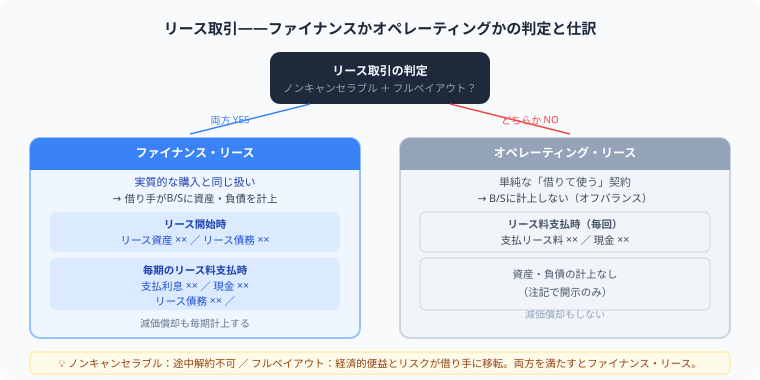

簿記2級のリース取引とは？
ファイナンス・リースの仕訳を解説
こんにちは、大谷です！
実は、今回紹介するリースの「利子抜き法」や「減価償却の年数選び」は、僕が大学の講義内で初めて解いたとき、「うわっ、なんじゃこりゃ……支払利息の数字ってどこから計算すんの！？」と頭を白紙にして激しくつまずいた大嫌いな論点でした（笑）。
だからこそ、当時の僕と同じようにひっかけの罠にハマって悩んでいる皆さんに、どこよりも直感的にゲーム感覚のパズルとして理解してもらえるよう、僕なりの攻略法をお届けします！
また、モチベーション維持のために、記事の末尾のほうにある【いいねボタン】をポチッと押してもらえると、めちゃくちゃ励みになりますしすごく嬉しいです！
リース取引は、コピー機や車両、機械装置などを借りて使う取引です。簿記2級では、ただの賃借料として処理する場合と、実質的に購入したように処理する場合を分けて理解します。
2026年度の簿記2級では、この記事で解説しているファイナンス・リース取引とオペレーティング・リース取引の区分を前提に学習して問題ありません。ただし2027年度から、企業会計基準第34号「リースに関する会計基準」の適用に伴いリース会計が全面改定されることが日本商工会議所から公式に発表されています。具体的には、「使用権資産」「リース負債」という新しい勘定科目が導入され、ファイナンス・リースとオペレーティング・リースの区分自体がなくなります（借りている資産はすべて使用権資産として計上する方式に統一されます）。2027年度以降に受験予定の方は、最新のテキストで学習してください。
リース取引とは

ファイナンス・リースは「実質的な購入」として資産と負債をB/Sに計上。オペレーティング・リースは単純な賃借料処理で、B/Sに載りません。
リース取引とは、会社が設備や車両などを一定期間借りて使用し、リース料を支払う取引です。購入すれば固定資産になりますが、リースでは所有権が貸し手に残ることがあります。
ただし、契約内容によっては、借りているだけに見えても実質的には購入とほとんど同じ場合があります。そのため会計では、リース取引を内容に応じて分けて処理します。
リース取引の種類
| 種類 | 意味 | 処理のイメージ |
|---|---|---|
| ファイナンス・リース取引 | 実質的に資産を購入したようなリース | リース資産とリース債務を計上する |
| オペレーティング・リース取引 | 通常の賃貸借に近いリース | 支払リース料などの費用処理 |
簿記2級で特に重要なのは、ファイナンス・リース取引です。資産と負債を同時に認識するため、通常の費用処理よりも仕訳が重くなります。
ファイナンス・リース取引
ファイナンス・リース取引では、リース物件を借りている側が、実質的にその資産を使い切るような契約になります。そのため、リース開始時にリース資産とリース債務を計上します。
| 借方 | 貸方 |
|---|---|
| リース資産 | リース債務 |
この仕訳は、「資産を手に入れた」と同時に「将来リース料を支払う義務を負った」と考えると理解しやすくなります。
利子込み法と利子抜き法
ファイナンス・リースの処理には、利子込み法と利子抜き法があります。簿記2級では、問題文で指定された方法に従います。
| 方法 | 意味 |
|---|---|
| 利子込み法 | リース料総額をリース資産・リース債務として計上する方法 |
| 利子抜き法 | 利息部分を除いた金額でリース資産・リース債務を計上する方法 |
利子抜き法では、リース料の支払い時に元本部分と利息部分を分け、利息部分を支払利息として処理します。
リース料支払い時の仕訳
利子抜き法で、リース料100,000円を支払い、そのうち支払利息が12,000円だった場合、残り88,000円はリース債務の返済です。
利子抜き法では、「前期末のリース債務残高 × 利子率」で毎期の支払利息を計算します。残りの金額（リース料 - 支払利息）が元本の返済＝リース債務の減少になるという、パズルの仕組みです。
例：リース債務残高 600,000円 × 利子率 2% ＝ 支払利息 12,000円
リース料 100,000円 － 支払利息 12,000円 ＝ 元本返済（リース債務の減少） 88,000円
| 借方 | 金額 | 貸方 | 金額 |
|---|---|---|---|
| リース債務 | 88,000 | 現金預金 | 100,000 |
| 支払利息 | 12,000 |
リース料をすべて費用にするのではなく、債務の返済部分と利息部分に分けるのがポイントです。毎期リース債務が減るたびに、翌期の支払利息も連動して小さくなっていきます。
減価償却の処理
ファイナンス・リース取引で計上したリース資産は、固定資産と同じように減価償却します。使っていくにつれて価値が減るため、減価償却費を計上します。
| 借方 | 貸方 |
|---|---|
| 減価償却費 | リース資産減価償却累計額 |
・【所有権移転外】ファイナンス・リースの場合
→ 借りているだけで自分のものにはならないので、リース期間（借りている年数）で割り算します
・【所有権移転】ファイナンス・リースの場合
→ 自分のものになるので、経済的耐用年数（使える年数）で割り算します
この分母の選び方1つで計算が全滅します。問題文の「移転か移転外か」は必ず最初にチェックしてください！
簿記2級では、リース期間・耐用年数・残存価額の指定をすべて確認してから計算に入りましょう。
オペレーティング・リース取引
オペレーティング・リース取引は、通常の賃貸借に近い処理です。リース資産やリース債務を計上せず、リース料を支払ったときに費用処理します。
| 借方 | 貸方 |
|---|---|
| 支払リース料 | 現金預金 |
ファイナンス・リースと比べるとシンプルですが、問題文でどちらの取引かを見落とさないことが大切です。
例題で確認
リース契約を結び、リース資産の見積現金購入価額が900,000円だった。利子抜き法で処理する場合、リース開始時の仕訳は次のようになります。
| 借方 | 金額 | 貸方 | 金額 |
|---|---|---|---|
| リース資産 | 900,000 | リース債務 | 900,000 |
その後、リース料を支払うたびにリース債務を減らし、必要に応じて支払利息を計上します。期末にはリース資産の減価償却も忘れずに行います。
よくあるミス
- ファイナンス・リースをすべて支払リース料で処理してしまう
- リース資産とリース債務を片方だけ計上してしまう
- リース料全額をリース債務の返済として処理し、支払利息を忘れる
- リース資産の減価償却を忘れる
- 利子込み法と利子抜き法を問題文で確認しない
まとめ
- リース取引は、設備などを借りて使用しリース料を支払う取引
- ファイナンス・リースでは、リース資産とリース債務を計上する
- 利子抜き法では、リース料を債務返済部分と支払利息に分ける
- リース資産は固定資産と同じように減価償却する
- オペレーティング・リースは支払リース料として費用処理する